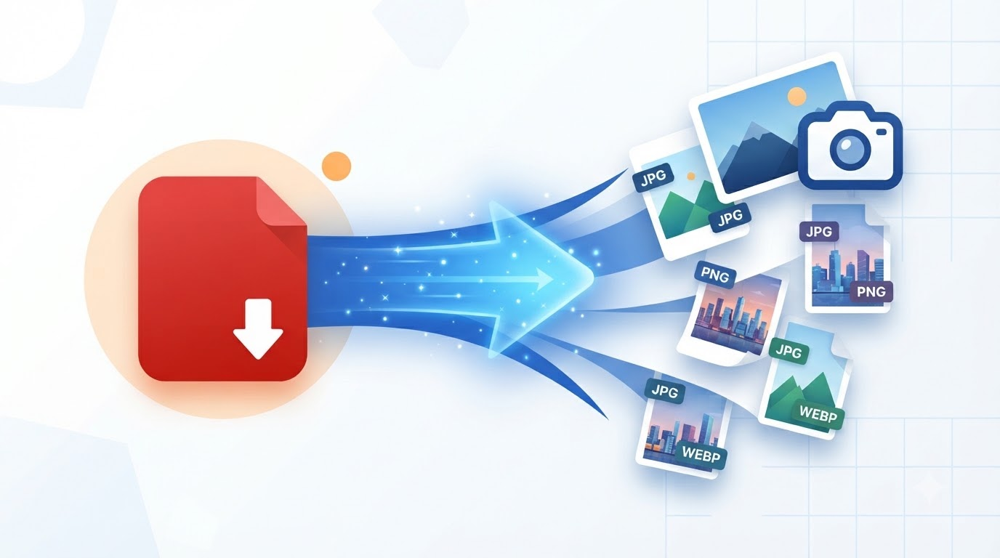

PDF to JPG Converter (ZIP)
Extract all pages from a PDF file into high-quality JPG images bundled inside a ZIP archive.
Select or Drop PDF File
Extract all pages into crisp individual JPG pictures
Complete Guide: Convert PDF Pages into High-Resolution JPG Images (ZIP)
Extracting individual raster graphics, presentations, invoice records, and scanned document pages from multi-page PDFs is often necessary when embedding slides into web presentations, sharing images via social apps, or uploading pictures into document portals. The DocEasy PDF to JPG Converter renders each vector page locally at high pixel density, packages the resulting image files into an organized file structure, and delivers a consolidated ZIP archive in seconds.

📷 [Place Demo Here: assets/images/pdf-to-jpg-demo.jpg]Step-by-Step Instructions:
- Step 1 - Upload PDF: Select or drag your target document into the upload drop area.
- Step 2 - Confirm File Loading: The file parser registers the document buffer and calculates total page volume.
- Step 3 - Extract & Compress: Press "Convert to JPG & Download ZIP".
- Step 4 - Download Archive: Save the bundled
.zipfile containing numbered JPEG files.
FAQ
Q: What image format and quality are exported?
High-clarity JPEG files with balanced 90% quality quantization.
Q: Is there a page or file size limit?
No arbitrary quotas. Performance scales with available device RAM.
Q: Are my confidential records saved on your server?
Never. Everything runs purely client-side.